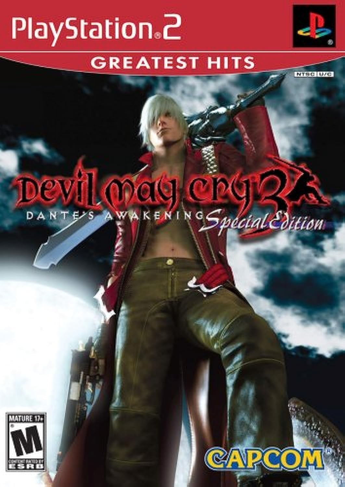

Sinopse
Devil May Cry 3: Dante's Awakening é um prelúdio do primeiro jogo da franquia e acompanha a origem do caçador de demônios Dante. Ele enfrenta seu irmão gêmeo Vergil, que deseja abrir um portal para o mundo demoníaco e despertar o poder do seu pai, Sparda.
O jogo é aclamado por seu sistema de combate refinado, dificuldade desafiadora e estilo estilizado. DMC3 introduziu o sistema de estilos de luta, permitindo ao jogador adaptar a jogabilidade de acordo com sua preferência, como Swordmaster, Gunslinger, Trickster e Royalguard.
Características Principais
- Sistema de combate com múltiplos estilos que alteram o modo de jogar
- História profunda focada na rivalidade entre Dante e Vergil
- Trilha sonora intensa que acompanha o ritmo frenético das batalhas
- Chefes desafiadores e combates cinematográficos
- Alta rejogabilidade com modos extras e desbloqueáveis
- Combinação de armas brancas e armas de fogo com grande fluidez
Imagens Adicionais